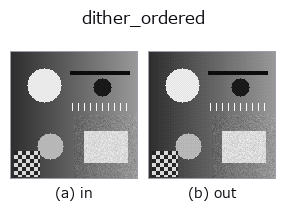

gray op• Datenarten: image → image
• Aufruf: fullseye.apply(img, "dither_ordered", a=0.5, b=0.5) (das 2-D-Modell ist ein Bild plus zwei skalare Regler a,b∈[0,1])

*Die Abbildung ist die tatsächliche Ausgabe auf einer synthetischen 128×128-Eingabe. Links Eingabe, rechts Ausgabe. Punktwolken als Draufsicht-Streudiagramm (Helligkeit = z), 1-D-Reihen als Linie, Volumen als Maximum-Projektion entlang z, Videos als mittleres Bild, komplexe Bilder als Betrag; Rückgabewerte, die kein Bild ergeben, werden als Werte gezeigt.*
Regler a durchfahren (0,1 / 0,5 / 0,9, der andere Regler auf Standard):
▸ dither_ordered: knob a sweep (docs site)
Regler b durchfahren (0,1 / 0,5 / 0,9, der andere Regler auf Standard):
▸ dither_ordered: knob b sweep (docs site)
Auf anderen Bildern (synthetische Szene / Foto / Münzen. Obere Reihe: Eingaben, untere Reihe: deren Ausgaben. Regler auf Standard):
▸ dither_ordered: other inputs (docs site)
*Die 4. Spalte ist eine Farb-Eingabe (H,W,3). Dieser Op verarbeitet Farbe, ohne Kanäle zu vermischen (er faltet den Farbkanal nicht als dritte Raumachse).*
> Für diesen Operator gibt es noch keine Übersetzung. Es folgt der Originaltext unverändert.
順序ディザ(Bayer 行列)で量子化する。`a がビット数 1〜8、b` が行列の大きさ。
量子化の前に、画素位置で決まる決まった量(Bayer 行列、`b` が 2x2 / 4x4 / 8x8 を
振る)を足してから丸める。平坦部の誤差が画素ごとに散るので、段差が細かい市松に化けて
縞が見えなくなる。誤差そのものは減らない —— 見え方を変えているだけで、
平均二乗誤差はむしろ `_quantize_uniform` よりわずかに大きい。
**誤差拡散(`dither_floyd_steinberg`)との使い分け**: 順序ディザは
画素ごとに独立なので、タイル分割しても継ぎ目が出ず、並列化も自由、
同じ入力に必ず同じ出力を返す。誤差拡散のほうが見た目は滑らかだが、
走査順に依存するので切り出す位置を変えると結果が変わる。
• Leitfaden zur Familie gallery2d_gray_arith
• Katalog der Beispieldaten (Download-URLs / Lizenzen) — 2-D nutzt skimage.data (BSD/Public Domain) plus synthetische Bilder, 3-D nennt Download-URLs echter Datenquellen (Stanford, PDS, …).
• Herkunft und Literatur der Operatoren — die Quellen der Forschung/Verfahren, auf denen diese Operatorfamilie beruht.
• Der kanonische Algorithmus (Autor, Jahr) und seine Anwendungen stehen im Familienleitfaden oben.
Das Programm unten ist nachweislich lauffähig (gleiche Eingabe wie die Abbildung). In der Studio-Hilfe wird dieser Block zu Schaltflächen, die es sofort laden und ausführen.
dither_ordered 0.50 0.50
▸ Load this pipeline · Load & run
• gallery2d_gray_arith — py -3.11 examples/gallery2d_gray_arith.py
image als Eingabe)identity · gaussian · mean_box · bilateral · unsharp · median · min_filter · max_filter
gray)gamma · quantize_uniform · quantize_lloyd_max · quantization_error · dither_floyd_steinberg · companding_mu_law · banding_map · invert
*Provenance: ops.py — 2D Operator-Registry. Diese Notiz wird von tools/opdocs.py md erzeugt (nicht von Hand bearbeiten).*
© 2026 Kazufumi Furuse — Fullseye operator documentation. Licensed under Apache-2.0.
{kind=link}
{kind=link}
{kind=link}